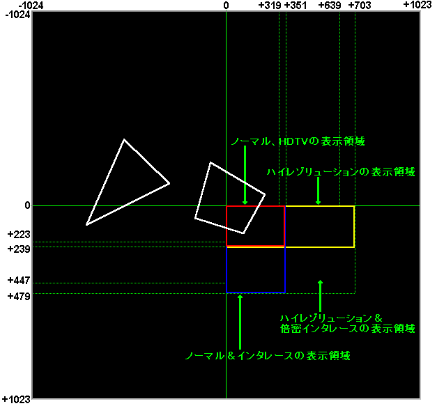

★HARDWARE Manual
★VDP1ユーザーズマニュアル
★HARDWARE Manual
★VDP1ユーザーズマニュアル
の順です。
図2.2 フレームバッファ平面

16色モード(4bit/pixel) ＭＳＢ ＬＳＢ ┌──┬──┬──┬──┬──┬──┬──┬──┬──┬──┬──┬──┬──┬──┬──┬──┐ │１５│１４│１３│１２│１１│１０│ ９│ ８│ ７│ ６│ ５│ ４│ ３│ ２│ １│ ０│ └──┴──┴──┴──┴──┴──┴──┴──┴──┴──┴──┴──┴──┴──┴──┴──┘ └─────────────────────────────────┘ └─────────┘ カラーバンク キャラクタデータ 64色モード(6bit/pixel) ┌──┬──┬──┬──┬──┬──┬──┬──┬──┬──┬──┬──┬──┬──┬──┬──┐ │１５│１４│１３│１２│１１│１０│ ９│ ８│ ７│ ６│ ５│ ４│ ３│ ２│ １│ ０│ └──┴──┴──┴──┴──┴──┴──┴──┴──┴──┴──┴──┴──┴──┴──┴──┘ └───────────────────────────┘ └───────────────┘ カラーバンク キャラクタデータ 128色モード(7bit/pixel) ┌──┬──┬──┬──┬──┬──┬──┬──┬──┬──┬──┬──┬──┬──┬──┬──┐ │１５│１４│１３│１２│１１│１０│ ９│ ８│ ７│ ６│ ５│ ４│ ３│ ２│ １│ ０│ └──┴──┴──┴──┴──┴──┴──┴──┴──┴──┴──┴──┴──┴──┴──┴──┘ └────────────────────────┘ └──────────────────┘ カラーバンク キャラクタデータ 256色モード(8bit/pixel) ┌──┬──┬──┬──┬──┬──┬──┬──┬──┬──┬──┬──┬──┬──┬──┬──┐ │１５│１４│１３│１２│１１│１０│ ９│ ８│ ７│ ６│ ５│ ４│ ３│ ２│ １│ ０│ └──┴──┴──┴──┴──┴──┴──┴──┴──┴──┴──┴──┴──┴──┴──┴──┘ └─────────────────────┘ └─────────────────────┘ カラーバンク キャラクタデータ ［注］RGBデータ混在時はb15=0 , 非混在時は任意
ＭＳＢ ＬＳＢ ┌──┬──┬──┬──┬──┬──┬──┬──┬──┬──┬──┬──┬──┬──┬──┬──┐ │ ＊│１４│１３│１２│１１│１０│ ９│ ８│ ７│ ６│ ５│ ４│ ３│ ２│ １│ ０│ └──┴──┴──┴──┴──┴──┴──┴──┴──┴──┴──┴──┴──┴──┴──┴──┘ ↑ └────────────┘ └────────────┘ └────────────┘ 「１」 ＢＬＵＥデータ ＧＲＥＥＮデータ ＲＥＤデータ
16色モード(4bit/pixel) ＭＳＢ ＬＳＢ ┌──┬──┬──┬──┬──┬──┬──┬──┬──┬──┬──┬──┬──┬──┬──┬──┐ │−−│−−│−−│−−│−−│−−│−−│−−│ ７│ ６│ ５│ ４│ ３│ ２│ １│ ０│ └──┴──┴──┴──┴──┴──┴──┴──┴──┴──┴──┴──┴──┴──┴──┴──┘ └─────────┘ └─────────┘ カラーバンク キャラクタデータ 64色モード(6bit/pixel) ┌──┬──┬──┬──┬──┬──┬──┬──┬──┬──┬──┬──┬──┬──┬──┬──┐ │−−│−−│−−│−−│−−│−−│−−│−−│ ７│ ６│ ５│ ４│ ３│ ２│ １│ ０│ └──┴──┴──┴──┴──┴──┴──┴──┴──┴──┴──┴──┴──┴──┴──┴──┘ └───┘ └───────────────┘ カラーバンク キャラクタデータ 128色モード(7bit/pixel) ┌──┬──┬──┬──┬──┬──┬──┬──┬──┬──┬──┬──┬──┬──┬──┬──┐ │−−│−−│−−│−−│−−│−−│−−│−−│ ７│ ６│ ５│ ４│ ３│ ２│ １│ ０│ └──┴──┴──┴──┴──┴──┴──┴──┴──┴──┴──┴──┴──┴──┴──┴──┘ └┘ └──────────────────┘ カラーバンク キャラクタデータ 256色モード(6bit/pixel) ┌──┬──┬──┬──┬──┬──┬──┬──┬──┬──┬──┬──┬──┬──┬──┬──┐ │−−│−−│−−│−−│−−│−−│−−│−−│ ７│ ６│ ５│ ４│ ３│ ２│ １│ ０│ └──┴──┴──┴──┴──┴──┴──┴──┴──┴──┴──┴──┴──┴──┴──┴──┘ └─────────────────────┘ キャラクタデータ
★HARDWARE Manual
★VDP1ユーザーズマニュアル